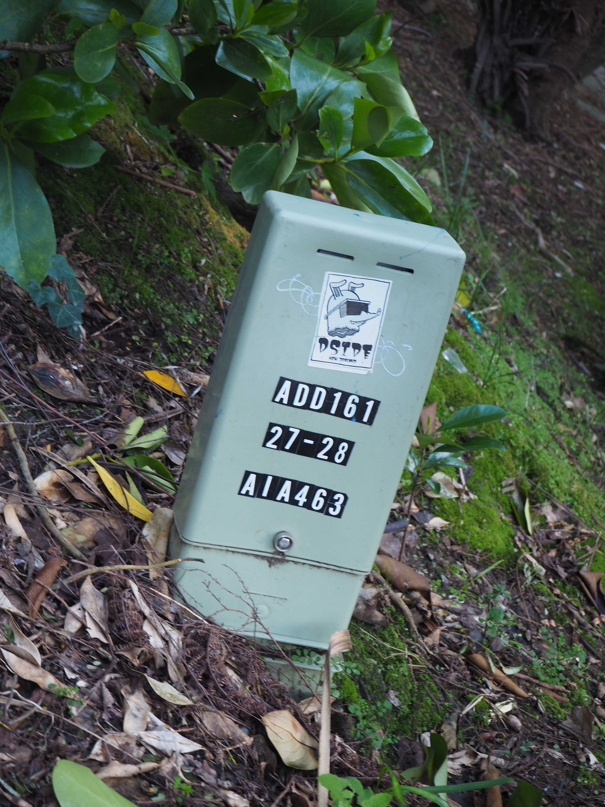
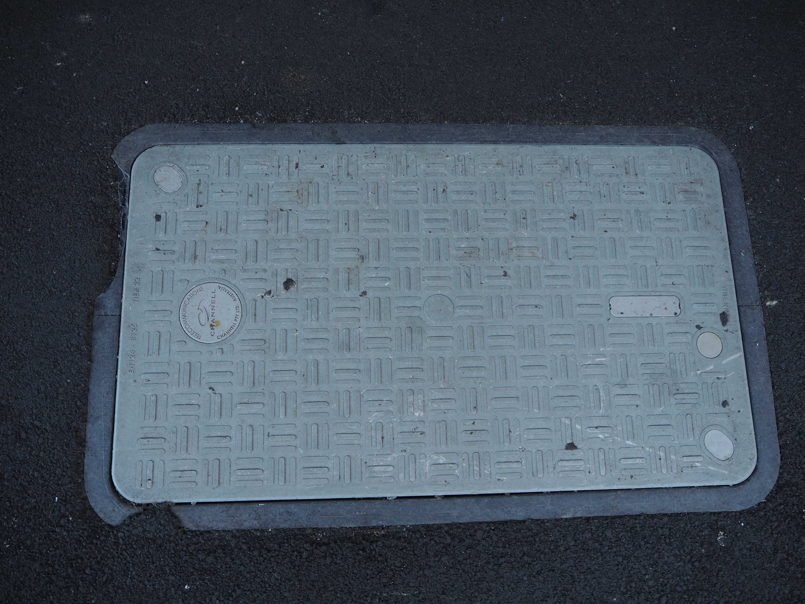

Security cameras
Images are captured by these cameras around Wellington and sent to local or online servers where the footage is stored.



Cable boxes
These boxes serve as access points for technicians who need to review telephone and internet connections around Wellington.

Weather monitoring station
These devices, found throughout Wellington, include a weather vane, anemometer, and rain collector to collection information about the weather which is then used to create the forecasts you read on the Internet.

Telecommunication ground covers and markings
These covers serve similar functions to those of the cable boxes, while the markings are used by technicians to list details for things that need to be done.